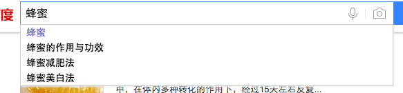
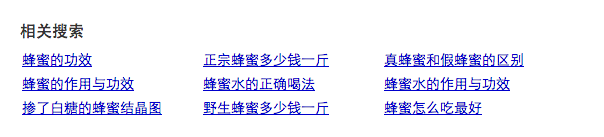
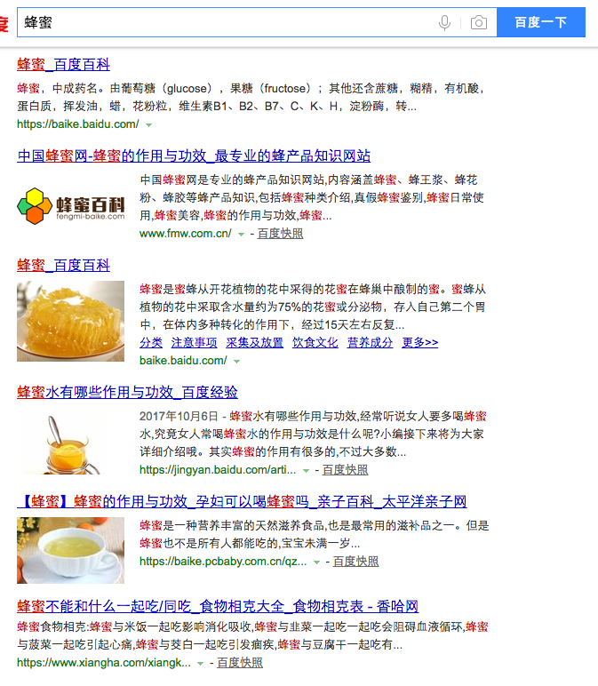
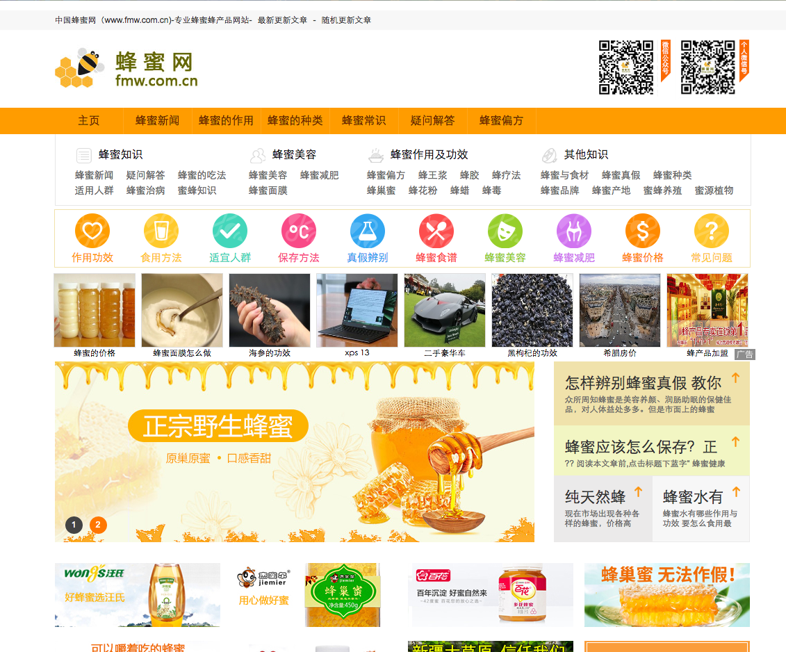

上星期公司组织share，我非常幸运的从高斯分布的转笔概率中，脱颖而出，成为这周的share者。。。。
想起曾经做过SEO，就想干脆share一些属于SEO的东西吧。
什么叫UE？
首先我们来了解一些UE的这关键词的真实概念。UE即为：User Experience简称UE或UX,也叫做用户体验，它是指用户使用某一产品（服务）的过程中主观心理感受。
UE的价值在哪？
做好网站用户体验其核心价值有三个：
- 增加网站用户粘度
- 减少网站的跳出率、
- 提高网站的转化率。
这也是我们每个人都想得到的结果。
UE设计与优化方向
具体有五个：
- 有用，让产品对用户有用，能解决用户的需求；
- 易用，这个很重要，不要让用户在操作上很难受；
- 友好，网站页面设计要做到有较好用户粘度；
- 良好感官，网站整体感官要好，页面设计，色彩及图片搭配要合理，合乎大众浏览体验；
- 品牌效应，这个是建立在以上四个的基础之上的，完善好上面四个后自然会贯通到品牌上来，做好前四个以后，品牌推广就容易很多了。
UE设计与优化的流程
最初需求
例：
我要做一个跟蜂蜜有关的网站
具体怎么有关，我不知道。
关键词UE分析
三看
- 看百度搜索下拉框
- 看相关搜索
- 看关键词自然排名前三内容
关键词分为两种
- 能产生直接或间接利益的。
- 不能产生利益的。
根据关键词分析，整理出相关性较强，又能直接或间接产生利益的一批关键词。
这些关键词除了词本身的意义，更透露出了用户的性别，年龄，搜索习惯，等等非常有用的信息。
注意：关于关键词扩展，一般优化项目中会使用工具来进行爬取。不需要手动。相关工具请自行搜索。
例：
搜索最初需求内的关键词 蜂蜜
- 看下拉框 
- 看相关搜索
- 看关键词排名前三内容
通过以上三看关键词得出：
目标人群：20-50岁之间，拥有一定经济基础的女性。
能产生需求关键词：功效作用类，价格类，真伪类。
站内优化
站内优化分为两种，一种是根据用户体验进行的逻辑布局优化，一种是纯粹为了排名而进行的技术优化。
UE优化
根据整理筛选出的几个重点关键词，讲用户对应关键词的需求操作步骤和逻辑简单化，和对应的布局。
例如：蜂蜜网站布局，20-50的女性，对于网站的良好感官是很在意的，因此尽量采用颜色鲜艳，比较抓眼球的UI界面，结合以UE的优化方向为主，按照目标关键词进行合理的布局和操作逻辑优化，达到，好用，易用的标准。

技术优化
网站结构
- 排查网页指数，流量，收录，br，指数词排名，高流量词覆盖
- 整站url结构，要求简介明了，规范，和可读性，要求遵循树状结构。
- 分析蜘蛛爬行日志，了解整站具体情况。
- 要有sitemap.xml，并在robots里面写明，建立索引库
PC页面
- 排查PageTilte，是否是按照用户需求定位部署，首页，栏目页，文章页标题是否布局合理。
- 排查meta标签中keywords是否是按照百度分词进行的部署
- 排查meta标签中Description书写是否合理。
- 排查页面适配移动站点情况
- 排查页面代码中h1，img，alt，title关键词部署，包括密度
- 排查页面中错误链接，和页面体验性布局。
- 排查页面在重点关键词中按排名表现，根据表现调整TKD
- 排查网页中链接部分，要求有合适的网站面包屑、网站导航、网站地图、内链部署模块、友情链接
- 及时排查404，死链提交给百度
- 统计代码添加情况。
移动页面：
- 标题主旨明确，
- 优质内容，体验
- 加载速度快
- 终端适配
- 地域扩展
- 排查被百度转码的Pc站点及时添加适配
- 新站建议建站对应目录，并给百度提交适配关系
站外优化
- 建设高质量外链，
- 增加稳定的友链，
- 稳定的搜索引擎收录，
- 指数词的增加。
数据分析
因为网站从优化到被百度重新排名，大概在两周的时间，或许更长。所以数据分析应该以 半月 为一个周期，
具体的维度有以下：
- 索引量
- 排名
- 点击量
- 咨询量
- 成交量
- 跳出率
我们可以根据如上几个数据来具体分析站点处在哪个阶段，从而去进行整改，进而提升成交量，转化为经济利益。
以下是数据分析后几种情况下的处理方式：
- 索引量低，没排名，点击量低，没对话没成交
- 这时候就要先做收录，因为收录页面多了排名几率才会提升，才有可能带来有转化页面。
- 有索引量，没排名，点击量低，没对话没成交
- 排查收录页面标题，和标题的匹配相关词，看是否能够带来对话和成交，进行微调，同时做站点收录
- 有索引量，有排名，没点击量，没对话，没成交
- 先查看排名是否为有效的大词流量词，不是流量词或者大词要进行微调匹配，再查看站点跳出率，排除自己IP后的点击量，如果跳出高，就要改善页面体验度，降低跳出率，提高对话转化率。
- 有索引量，有排名，有点击量，没对话，没成交
- 这时候要排查自己站点转化，包括页面质量度，体验程度，站点移动适配，移动站质量度，是否符合用户体验习惯，还有页面是否与标题相关。
- 有索引量，有排名，有点击量，有对话，没成交-
- 先看咨询记录，看是否是对话质量度引起的没成交，如果是，提高页面用户体验，提升用户对话质量，如果不是，可与咨询师协商解决。